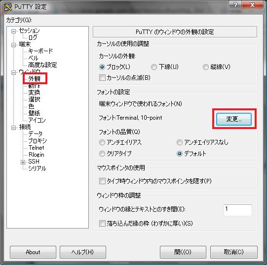
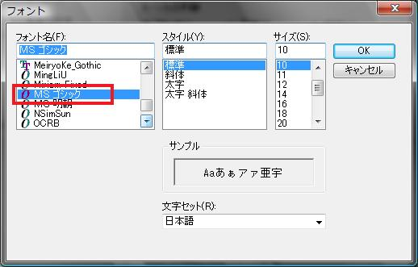
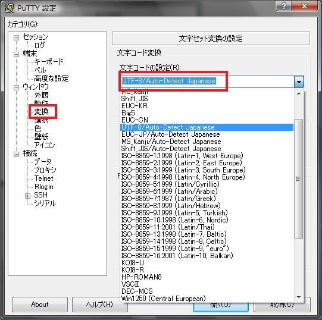
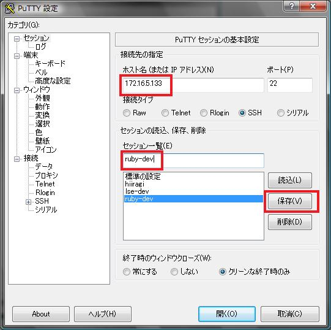

ここでは，Ruby 言語についての説明をはじめる前に，まず自分のコンピュータ上で Ruby を動かすための手順について学んでいく。
それでは，各自 VMware の中にある Debian etch を起動してログオンしてみよう。
# aptitude update
# aptitude install openssh-server -y
CD-ROM を入れるように指示された場合，VMware 上から Debian のネットワーク CD イメージを入れて [ENTER] を押す
ここまで出来たら，SSH のデーモンが立ち上がるので PuTTY からログオンできるようになる。
IP アドレスを確認する
# ifconfig eth0
eth0 Link encap:Ethernet HWaddr 00:0C:29:69:FC:64
inet addr:172.16.5.133 Bcast:172.16.5.255 Mask:255.255.255.0
inet6 addr: fe80::20c:29ff:fe69:fc64/64 Scope:Link
UP BROADCAST RUNNING MULTICAST MTU:1500 Metric:1
RX packets:4580 errors:0 dropped:0 overruns:0 frame:0
TX packets:562 errors:0 dropped:0 overruns:0 carrier:0
collisions:0 txqueuelen:1000
RX bytes:523064 (510.8 KiB) TX bytes:71248 (69.5 KiB)
Interrupt:177 Base address:0x1400
強調表示されている箇所が自分の IP アドレスである。
PuTTY を起動し，左側の「外観」をクリックして，フォントを MS ゴシックへ「変更」する
左側の「変換」をクリックし，文字コードを UTF-8/Auto-Detect Japanese に変更する
左側の「セッション」をクリックし，ホスト名の欄に IP アドレスを入力，セッション一覧に ruby-dev と入力，「保存」をクリックする
開くをクリックしてログオンする
# aptitude install ruby irb ruby1.8-dev rubygems -y
Ruby がインストールされていることを確認する
# ruby -v
上記のような表示が出ていれば完了
# aptitude install vim-ruby -y